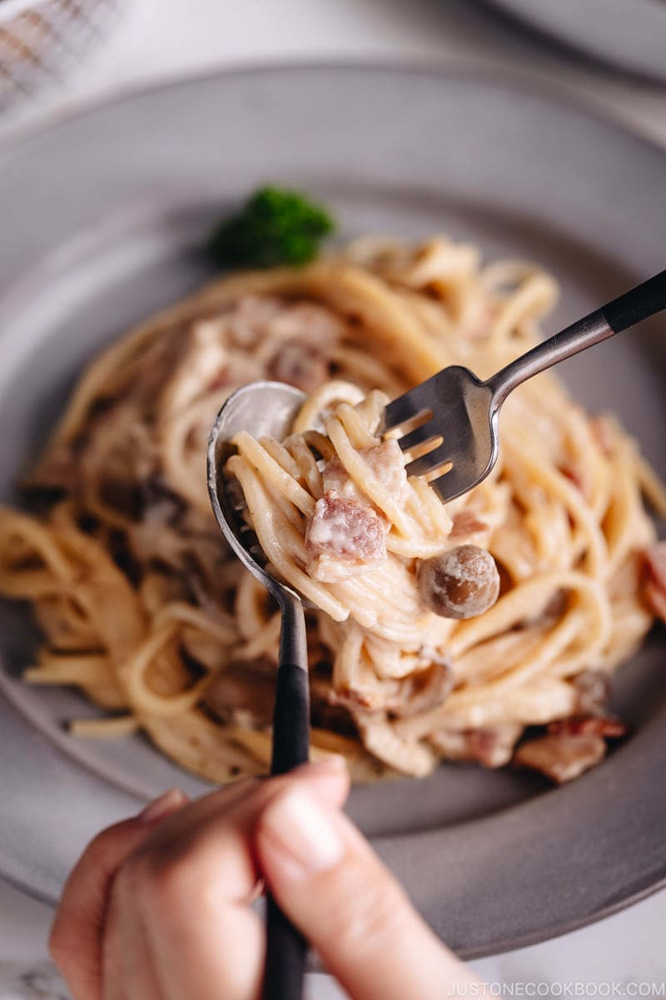
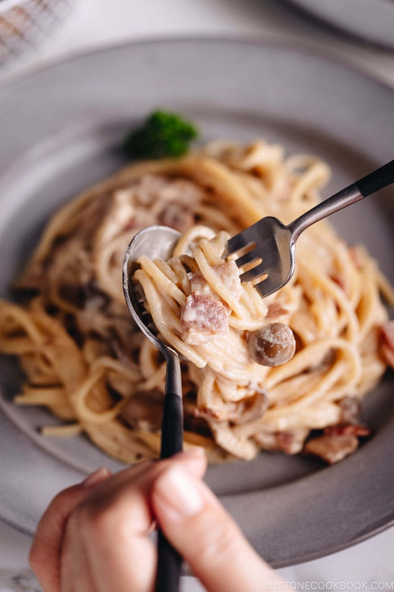

Rice pudding
Origin: France Source: Family Recipe Category: Dessert
I learned this dessert in the French Culture course which I took during my undergraduate study. I cooked it with my classmates and gave it to the other students to taste.
Recipe Ingredients
- 3 cups of rice
- 1 litter of milk
- 3/4 of a cup of sugar
- 1/2 cup of fresh cream (optional)
- A vanilla pod or 2 spoons of Vanilla extract or 3 bags or vanilla sugar (optional)
- 1 coffee spoon of ground cinnamon (optional)
Recipe Steps
- Rinse 3 cups of rice until water runs clear.
- Combine rice, 1 liter of milk, vanilla, and cinnamon.
- Simmer on low heat for 20-25 mins, stirring.
- Add 3/4 cup sugar, cook 5-10 mins.
- Stir in 1/2 cup fresh cream.
- Serve warm or chilled. Garnish as desired. Enjoy!
Additional Food images


Lemon Pie
Origin: France Source: Family Recipe Category: Dessert
I also learned this recipe from my French cultural course. It was the most popular dish in that class but I haven't made it by myself so far.
Recipe Ingredients
- 250g of flour
- a pinch of salt
- water
- 225g of butter and/or oil
- 150g of sugar
- 3 eggs
- the juice of 2 lemons or a bottle of lemon juice
Recipe Steps
- Preheat oven to 180°C (350°F).
- Make a pastry using 250g flour, a pinch of salt, and 125g of butter/oil with a bit of water.
- Roll out the pastry, line a tart pan, and trim excess.
- Whisk 150g sugar, 3 eggs, and the juice of 2 lemons.
- Pour the lemon mixture into the pastry.
- Bake for 30-35 minutes until set and golden.
Additional Food images


Creamy Mushroom & Bacon Spaghetti
Origin: Italy Source: Family Recipe Category: Main course
I learned this dish from my dad and it's my specialty, I serve it all the time.
Recipe Ingredients
- 8 ounces spaghetti
- 6 slices bacon, chopped
- 2 tablespoons butter
- 8 ounces mushrooms, sliced
- 3 cloves garlic, minced
- 1 cup heavy cream
- 1/2 cup grated Parmesan cheese
- Salt and black pepper, to taste
- Fresh parsley for garnish
Recipe Steps
- Cook spaghetti until al dente; drain.
- Cook bacon until crispy; set aside.
- Sauté mushrooms and garlic in butter.
- Add cream and Parmesan; simmer until thick.
- Season with salt and pepper.
- Toss cooked spaghetti in the sauce.
- Add bacon, garnish with parsley.
- Serve hot. Enjoy!
Additional Food images
 
